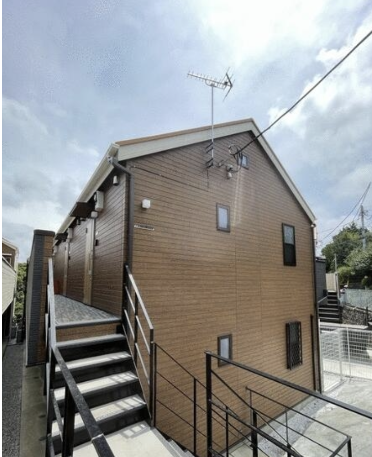
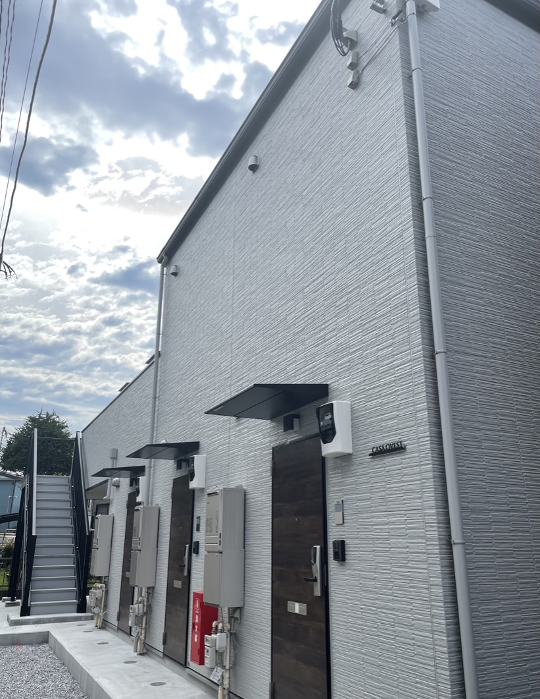
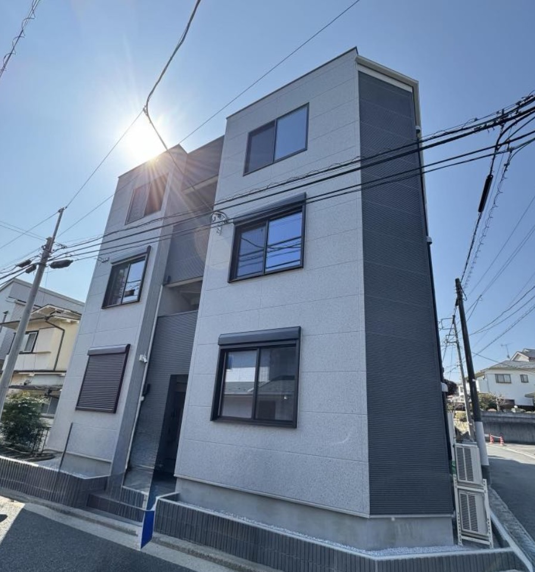
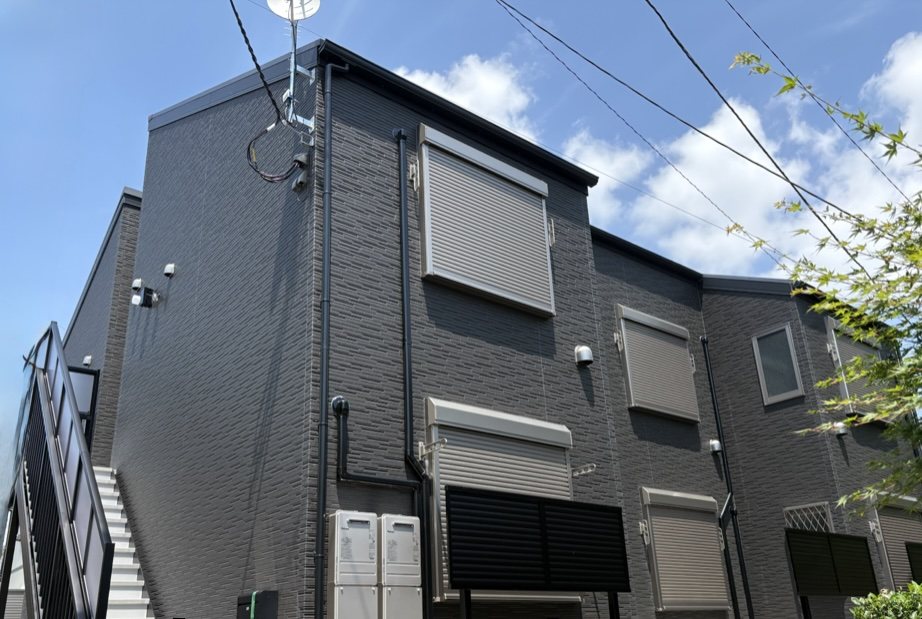
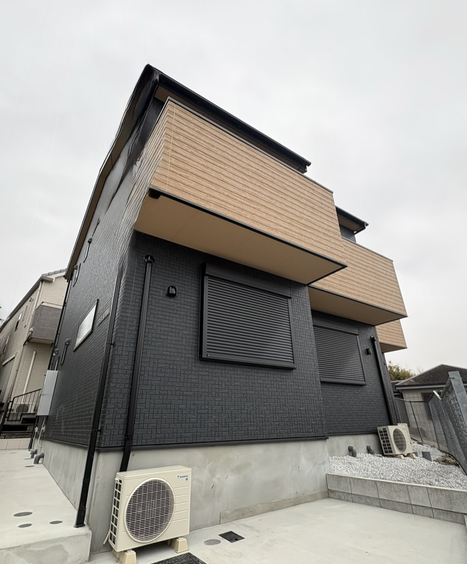

Portfolio
横浜市内に5棟41戸。全物件新築木造、光回線完備、月次清掃標準化。
入居者の豊かな暮らしを土台から支えます。
Portfolio Overview
保土ヶ谷区・西区・神奈川区・港南区と、横浜市内の4エリアに分散保有。 全物件が新築木造・所有権・駐車場なしで統一された運営基準のもと、 JR・京急・市営地下鉄の各沿線に配置しています。

2022年6月竣工Property 01
SANDSファーストプロパティ。1K（18〜19㎡）と1K+ロフト（1・2階）の混在型。 保土ヶ谷エリアの利便性と閑静な住環境を両立した2階建て。 劣化対策等級2級取得。全室入居済み（稼働率97%）。

2024年3月竣工Property 02
1LDK（47㎡+ロフト）×2戸と1K×6戸の混在型。 横浜中心部・みなとみらいへのアクセス良好な西区に立地。 不動産鑑定評価額1億2,000万円。劣化対策等級3級取得。稼働率98%。

2025年2月竣工Property 03
3階建て1K×9戸。18〜20㎡の使いやすい間取りで、各階3室の整然とした構成。 東神奈川エリアの利便性が高く、横浜・川崎へのアクセスも良好。 不動産鑑定評価額1億2,700万円。劣化対策等級3級取得。稼働率98%。

2025年7月竣工Property 04
SANDSの最大規模物件、10戸。1K（17㎡）と1K+ロフト（5.9〜8.6㎡）の2タイプ構成。 ブルーライン沿線で横浜市内の主要ターミナルへの直通アクセスが強み。 劣化対策等級2級取得。取得直後から満室稼働継続中。

2026年3月竣工Property 05
2026年3月竣工の最新物件。港南区の閑静な住宅地に立地し、港南中央駅から 徒歩5分の好立地。1K（17㎡）6戸。竣工と同時に全室入居済み。 劣化対策等級3級取得。SANDSの中で最高利回りを誇る。
Management Standards
保有物件数が増えても入居者満足度を落とさないために、
管理オペレーションを標準化・仕組み化しています。